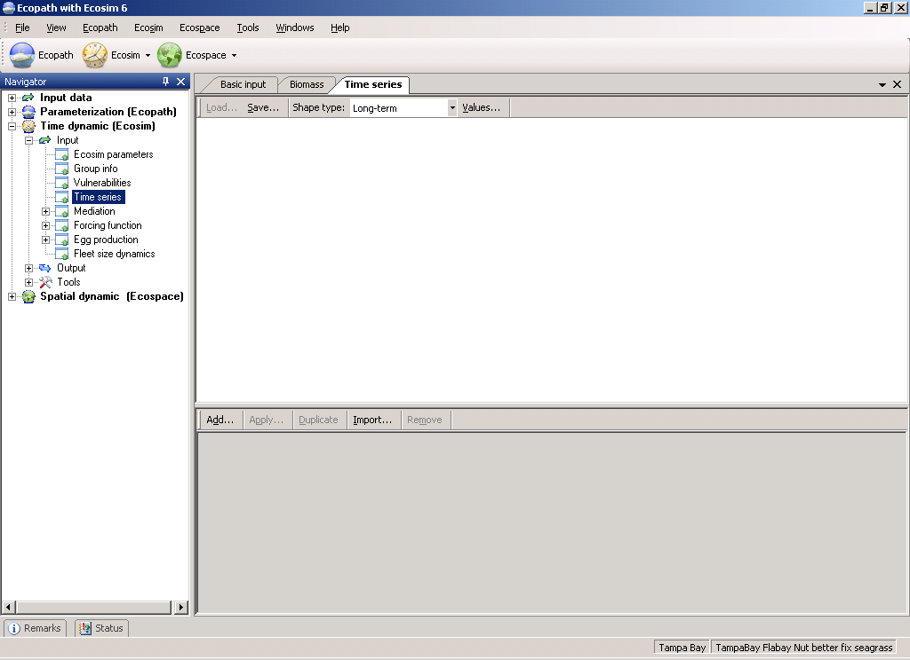
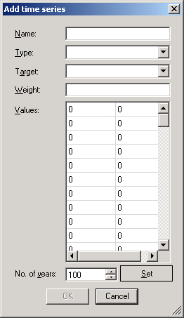
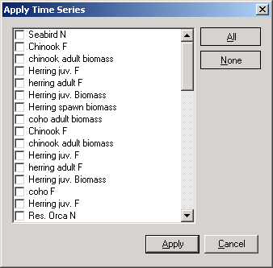
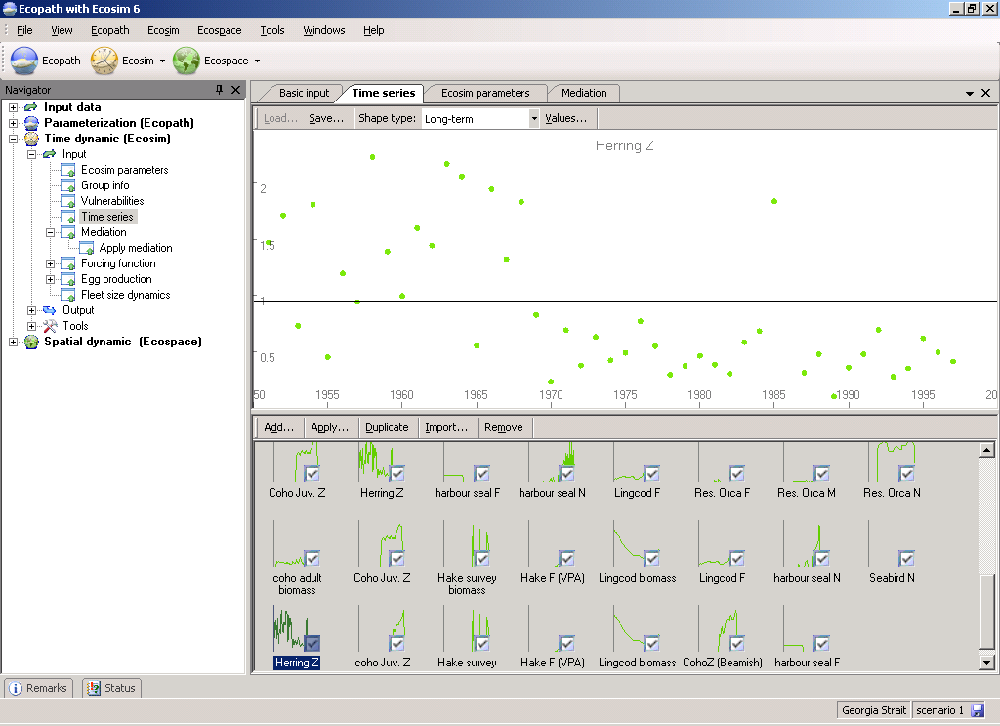

A critical step in development of credible models for policy analysis is to show that they can at least reproduce observed historical responses to disturbances such as fishing (see introductory material on Time series fitting in Ecosim, Hints for fitting models to time series reference data as well as the help section on Ecosim’s Time series fit search interface, which searches for Vulnerabilities that can help improve the model’s fit).
There are two main types of data that you can read in to Ecosim: historical comparison data and time forcing data. Historical comparison data enable comparison between historical observations and the model’s predictions. Time forcing data are used to force certain variables in the model (i.e., ‘drive’ the model). Fishing effort (by gear or by pool) and fishing mortality can be forced in Ecosim.
The Time series form (Time dynamic (Ecosim) > Input > Time series) provides an interface where users can read in, view and activate time series for use in Ecosim.
There are two ways to read time series data into Ecosim: (i) time series can be imported from a csv file (see Import… below); or (ii) time series can be typed or pasted in directly using the Time series form (see Values… below).
When you open the Time series form for the first time, there will be no time series displayed in the lower panel (Figure 8.4). To get started, use either the Import… or the Add… buttons on the lower panel of the form.
Opens the Import time series dialogue box. This allows you to import multiple time series simultaneously from a CSV (Comma Separated Values) format file and is the most commonly-used means of reading time series data into Ecosim. See Import time series for instructions on using this form. Note that this form can also be accessed from the main Ecosim menu.
After importing time series, they must be activated using Apply (see below).
Opens the Add time series dialogue box for adding time series manually (Figure 8.5). To add a time series using the Add time series dialogue box:
1.Type (select?) the number of years for the time series.
2.Click the Set button.
3.Select the data type from the drop-down menu in the Type window. Available data types are Absolute biomass, Average weight (for multi-stanza groups only), Catch, Fishing mortality*, Fishing effort (by fleet)*, Relative biomass, Time forcing*† or Total mortality.
*Indicates forcing time series;
†Indicates a series used for physical forcing of nutrient concentrations (see Ecosim parameters and links therein); hatchery production (see Hatchery populations in Ecosim); parameters that affect trophic interactions through abiotic factors (see Forcing function and Apply forcing function (consumers)); or primary production (see Apply forcing function (primary producers)).
4.Select the Ecopath group to which the time series applies from the drop-down menu in the Group window.
5.Assign the data series a relative weight using the Weight window. This represents a prior assessment by the user about relatively how variable or reliable that type of data is compared to the other reference time series (low weights imply relatively high variance or unreliable data; higher weights imply low variance or reliable data).
6.Type the Y-values of the time series in the right hand column. Monthly time-steps are automatically displayed in the left hand column.
7.Click OK. The time series will be displayed in the main panel of the form and also as a thumbnail in the lower panel.
After adding a time series, it must be activated using Apply (see below).
Copies the currently-selected time series.
Removes the currently-selected time series.
All imported time series must be applied before they are available to Ecosim. To apply time series:
1. Click Apply in the bottom panel of the Time series form to open the Apply time series dialogue box (Figure 8.6). Select individual time series using the check boxes or select all available time series using the All button. If you have several datasets loaded, the datasets will be shown as nested menus. You can apply time series from different datasets simultaneously.
2. Click the Apply button on the dialogue box.
Thumbnails of successfully applied time series will be shown with a check mark (Figure 8.7).
There are two additional buttons at the top of the Time series form. First select a time series from the thumbnails in the bottom panel, then:
Save
Opens a dialogue box prompting you to save the currently-selected time series to a bitmap file (.bmp). Use this dialogue box to name the file and browse for a location to save it.
Values
Displays information and values for the currently-selected time series.

Figure 8.4.

Figure 8.5.

Figure 8.6.

Figure 8.7.